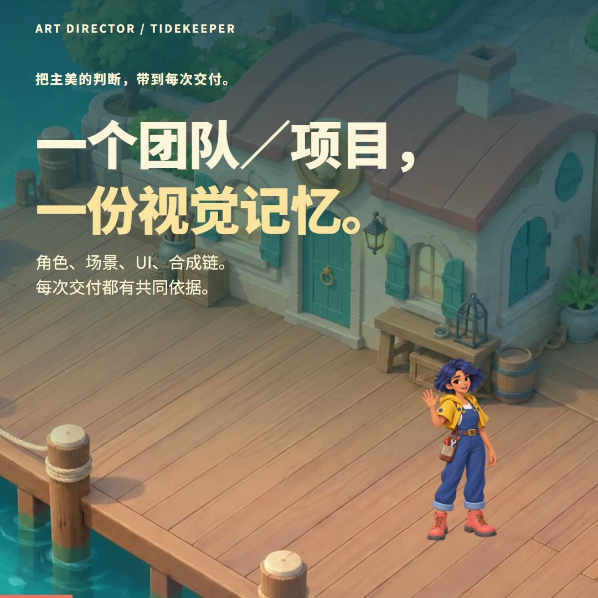
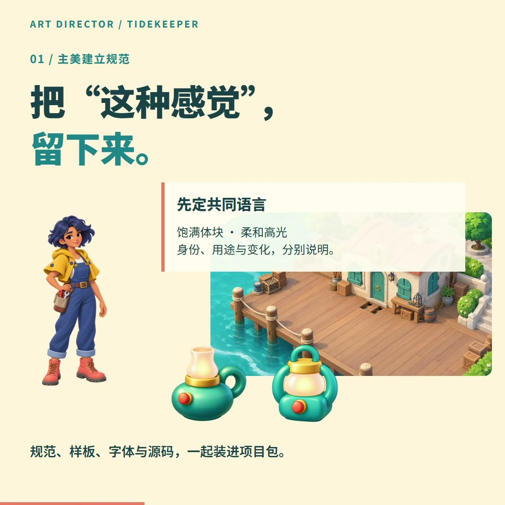
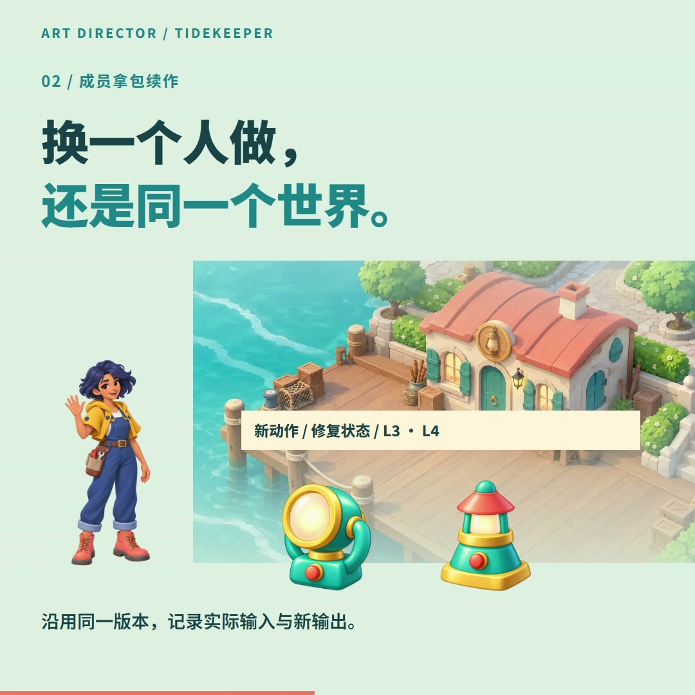
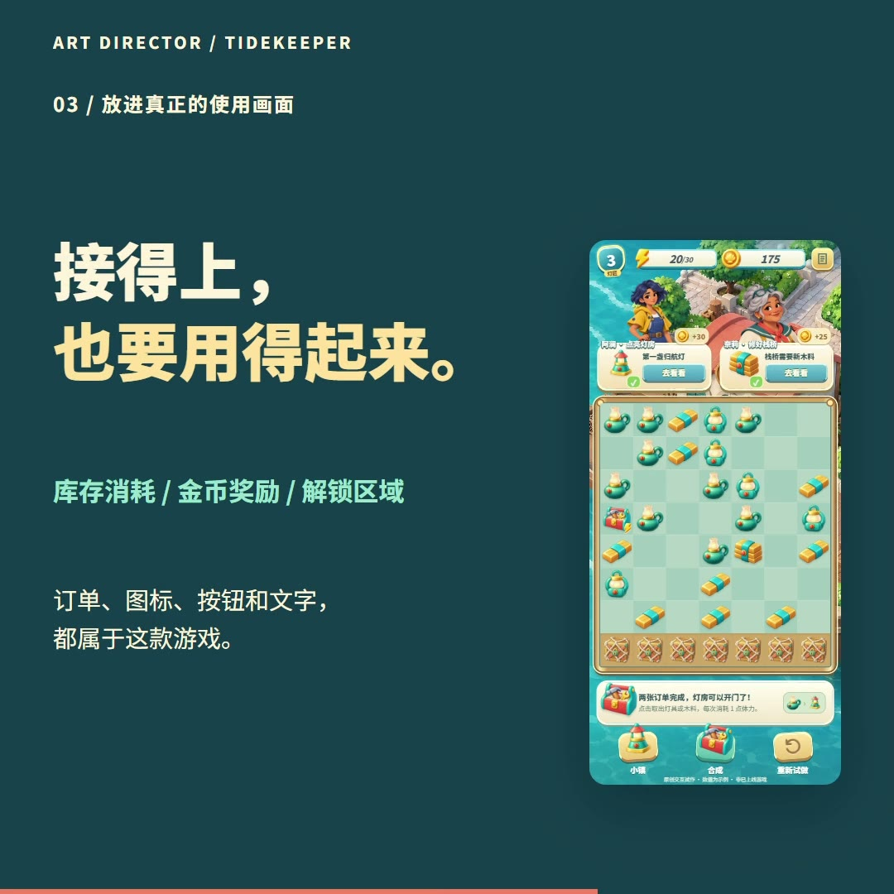
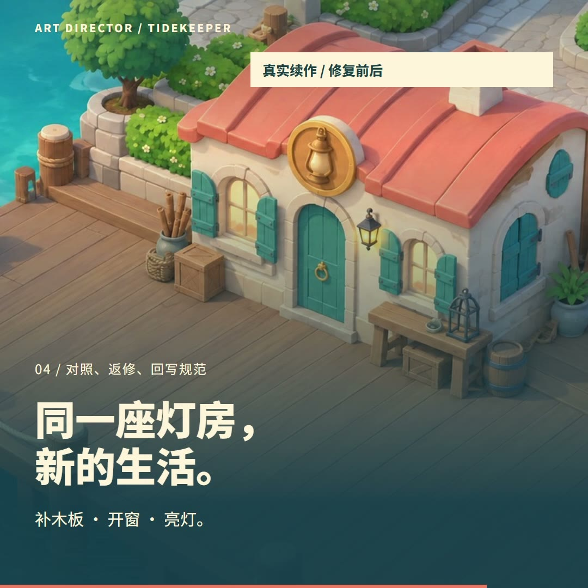
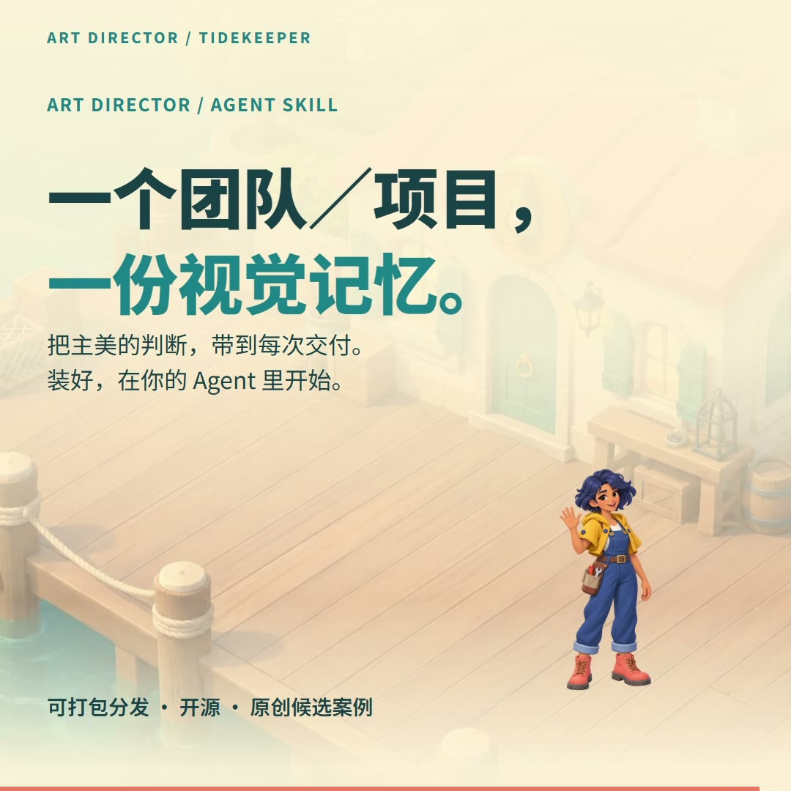

01
Selected work / October 2026
让作品，
先开口。
把已经打磨好的美术与产品细节，编成一段完整的介绍。场景、角色、真实界面，各有自己的镜头。
24 秒，从一份共同的视觉记忆，到合成、交付与灯房修复。
A world in six scenes
画面丰富，故事也完整。
沿用已经加工好的角色、场景、灯具和游戏界面。每一张都是最终影片里的实际画面。






More ways to tell a story
选择适合内容的表达。
完整美术案例放在最前。简洁的产品演示与早期动效练习，也各有用处。